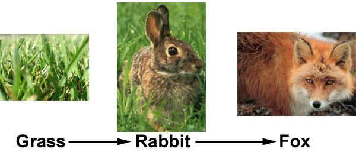

My first completed project in AP Computer Science was my Scratch project. The project is loosely based off the anime My Hero Academia where you play as a student in a high school for superheroes. Throughout the game, you save the world by fighting various supervillains.
The purpose of the game is to have users become immersed in a funny story through the impact of their actions. They will be prompted with multiple choices in how to deal with something or in deciding what their superpowers are.
One of the first difficulties I faced while working on the project was deciding whether the separate dialogues of each scene should be separate sprites in Scratch, or each bit of dialogue is their own sprite. What I ended up doing was having each scene have their own dialogue sprite. That sprite would have multiple costumes for each piece of dialogue/action. This way, it would be more organized and avoid complicating the scripts for each scene. It was certainly more easy than our first version with each text box having its own sprite. Another difficulty later on was how to implement the effect of the quirk you chose during each scene. This was based on initial feedback where we were encouraged to make your superpower have an impact on the story. After some testing, we decided the best way to do this was have a nested if-else statement where a bit of dialogue pops up differing on what quirk you chose. So attacking an enemy would display an action saying you lit their head on fire or shot eye lasers at them based on your quirk, for example.
During the project, I learned more and expanded my skills on things such as algorithms and variables. These are important skills in the class because they will show up later on especially when we are working on other games.
To play the game, click here.

In this project, we created an Android app using App Inventor provided by MIT. The app’s main purpose was to inform users on what tarter Pokémon is the best for their Pokémon game. Depending on the generation of starters, the user is given a set of information on that specific Pokémon. They are given basic info that describes what their specialties are and how difficult it would be to use them in the game. The video begins with the Start Screen with a simple background and button. The button leads you to the generation select screen, where you choose which generation the game you are playing is in. After that, you are lead to a screen where you are prompted to choose your starter. The color determines what type of starter it is. Once they are chosen, you are shown a picture of the starter and some useful information about them. This is the case for all generations of starter Pokémon from Generation 1 to Generation 7.
For our first Python project, we made an interactive fiction story and it uses Python 2.7.10 as a programming language. The purpose of the program is to have a choose-your-own-adventure style of story able to played through the use of a Python computer program. The story is based on a true story, and it has players learn important life lessons. There are multiple endings, all of which give you an important lesson even if the ending was a bad one. The video depicts the true ending where you make all of the correct decisions. The video shows that you must type a certain input in the command line to make decisions. These are accomplished through the use of functions and nesting of functions within other functions, and are what allows you to make your own decisions.
Our interactive fiction project uses modules in order to make the code easier to read and more organized. This organization allows us to see what sections are causing errors or what part of the story is creating the said error. When doing it in this way, we do not need to remove an entire chunk of code in order to fix it and creating more errors in the process. For example, the intro function is the very first function and within it, there is another function that is called. This process is repeated in modules to make things easier. The second example shows the bully function is used in two places, so this makes things much easier. If the function were not defined, then you would need to copy and paste that segment of code two times, making the code much lengthier than needed. Completing the code within one single strip of code and not in modules would make it unorganized, harder to read, and unprofessional.
To play this interactive fiction project, hit the green play button below.
For this final Python proect, we used Python 2.7.10 as the programming language. The purpose of the program is to mainly showcase a translator that translates English into the fake language known as Pig Latin. There also a few silly smaller “languages” such as an “uwu” translator that changes l’s and r’s to w’s, and a b emoji translator that causes c’s and k’s to become b’s. The video begins with the main function, language_select(), which allows you to choose any of these 3 languages. Each of them are run with an example sentence. Each one has a prompt that asks you to input an English phrase or sentence, and once it is sent, the output is a translation of that input.
To play this, hit the green play button below.
We created infographics on any computational innovation of our choice. The one I chose was facial recognition, and its purpose is to be able to detect human faces with sufficient accuracy for use in other programs (e.g. apps or security purposes). The infographic illustrates facial recognition by stating the main purpose of it, along with some examples of benefits and dangers to society the software may pose. Some of these examples include apps like Snapchat with face filters or the privacy of people being violated.
To view the Big Data infographic, click here.
Data is very useful for finding patterns and trends in certain things. Automating the use of data to create graphs. I chose to create data from a variety of sources like best selling video games or most popular social media. From the best-selling video games list, I discovered how overwhelmingly much more sales the top 2 contenders had over the remaining video games that ranked in the top 10. Analyzing the market for each film genre revealed similar results with the top genres having considerably more than the other genres. The top 3 genres took up more than 60% of the total film revenue. The social media most popular among teens was Snapchat from my analysis, followed by Instagram, which seems to be in line with what most of my peers use. Very few teenagers use Linkedin.
Simulations are very important in predicting how things may turn out. One assignment we had was to modify a premade simulation from NetLogo. We chose to work with the Rabbits Grass Weeds model because it was very similar to a model we worked on before, the Wolf Sheep Predation. At the same time it was different enough to make things interesting and make any work done for it worthwhile. A new assumption in the simulation we created was foxes eating rabbits and gaining their energy like it would in a food chain. The animals may reproduce if they have enough energy. If they do not have enough, they die.
Because we added one more animal to the simulation, it becomes a much more complex food chain in the simulation. It more accurately represents the real world because a real world food chain would not consist of only an herbivore and plants. By adding a predator, it lets us see more accurately how a rabbit population may be affected in the real world. Previously, we would only see how rabbits would be affected by grass and weed populations. Since the simulation is more like the real world, our predictive power using the simulation is increased for the better.
To view the NetLogo file, click here.
We created a presentation that was meant to have us do research on a well-known malware. I chose to base mine on the malware known as "Flame". Flame spies on Windows activity and steals data from it with keystroke monitoring and packet sniffing functionality as well as backdoor capabilities that enable cyber attackers to update the malware and trigger it or erase it as desired.
To view the presentation, click here.
The first task of the AP Portfolio was to do research on a certain computational innovation similar to the Big Data project. My task was on the Apple AirPods, which are meant to provide an easy and versatile experience when using them with a compatible Apple device. They are convenient for use since “just opening the AirPod case tells the iPhone to pay attention and shows battery information”. They can even connect to your Apple Watch, iPad, or Macbook.
To view the Explore Task infographic, click here.
For the Create Task of the AP Portfolio, we had to create something that fulfilled a certain role. You could make an app or game, and I ended up choosing to create an app designed to act as a quizzing app for Spanish learners and speakers. The app was created through incremental and iterative design, where each time a piece of code was added or removed, then the app prototype was downloaded and tested to see if it worked as intended. Code was edited in chunks, with one function being added before work was done on the next. One difficulty was making sure that user-inputted answers were counted as correct when one part of the phrase was omitted. For example, “pollo” should be correct despite the answer being “el pollo”. This was resolved when the if statement was changed from “if input = answer” to “if answer contains input”.
To view a demonstration of the App, click here.